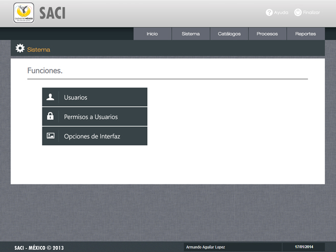

/ Permisos a Usuarios.

Paso 2.
Haga clic en cualquiera de las opciones "Catálogos, Procesos o Reportes" que se encuentra delante de cada nombre de usuario.
Paso 3.
Si selecciono Catálogos, habilite o inhabilite las características a las cuales el usuario tendrá acceso. Para finalizar haga clic en "Modificar".
Si selecciono Catálogos, habilite o inhabilite las características a las cuales el usuario tendrá acceso. Para finalizar haga clic en "Modificar".
Objetivo.
Esta pantalla tiene por objeto activar los permisos para acceso y uso de las diversas funciones del sistema, el administrador principal es el único que puede asignar estos permisos.
Paso 1.
Para asignar permisos en el uso y acceso al sistema por cada usuario, haga clic en el cceso "Permisos a Usuarios".
Esta pantalla tiene por objeto activar los permisos para acceso y uso de las diversas funciones del sistema, el administrador principal es el único que puede asignar estos permisos.
Paso 1.
Para asignar permisos en el uso y acceso al sistema por cada usuario, haga clic en el cceso "Permisos a Usuarios".
Paso 4.
Si selecciono Procesos, habilite o inhabilite las características a las cuales el usuario tendrá acceso. Para finalizar haga clic en "Modificar".
Paso 5.
Si selecciono Reportes, habilite o inhabilite las características a las cuales el usuario tendrá acceso. Para finalizar haga clic en "Modificar".
Si selecciono Reportes, habilite o inhabilite las características a las cuales el usuario tendrá acceso. Para finalizar haga clic en "Modificar".
Navegación.
Par volver al Menú y opciones del Sistema utilice el botón "Funciones" o directamente el botón "Sistema".